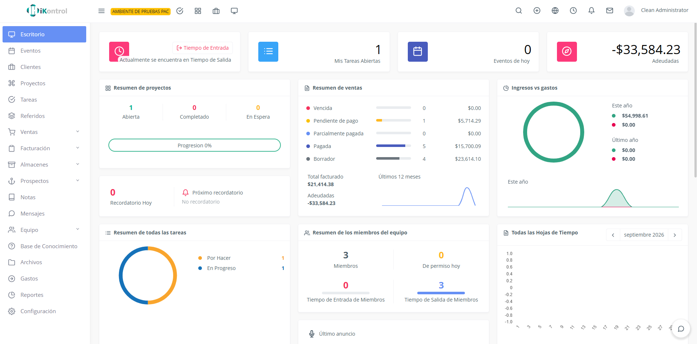
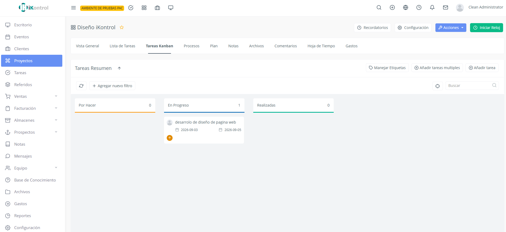
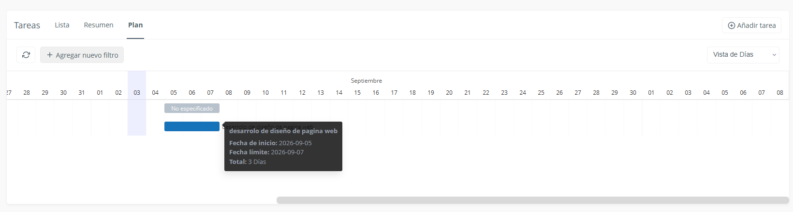

Lo esencial
iKontrol Starter
Para empezar a organizar y controlar tu negocio.
Consultar precio
Clientes, ventas, pagos y cobros, facturación CFDI 4.0 y cotizaciones básicas.
Quiero StarteriKontrol ERP
Vende, cobra, factura, administra y coordina tu operación desde una sola plataforma. iKontrol conecta la información de tu negocio para ayudarte a tomar mejores decisiones.
Descubre Starter y ERP Pro ↓

Menos dispersión. Más claridad.
Ventas por un lado, facturas por otro y pagos pendientes de seguimiento. Cuando la información se dispersa, entender la operación requiere más trabajo.
iKontrol ayuda a reunir estas áreas para trabajar con una visión compartida.
Una sola plataforma
Explora las áreas de iKontrol ERP Pro. El alcance de cada versión se detalla más abajo.
Comercial
Administración
Fiscal
Inventarios y compras
Organización
Información
Starter + ERP Pro
Lo esencial
Para empezar a organizar y controlar tu negocio.
Consultar precio
Clientes, ventas, pagos y cobros, facturación CFDI 4.0 y cotizaciones básicas.
Quiero StarterMás áreas conectadas
Para empresas que necesitan conectar más áreas y tener mayor control de su operación.
Consultar precio
Comercial, administración, fiscal, inventarios, organización e información.
Solicitar demostración✓ Incluida · Por confirmar: alcance de Starter pendiente de validación. Las adecuaciones se evalúan por proyecto.
| Funcionalidad | Starter | ERP Pro |
|---|---|---|
| Comercial | ||
| Clientes | ✓ Incluida | ✓ Incluida |
| Ventas | ✓ Incluida | ✓ Incluida |
| Cotizaciones básicas | ✓ Incluida | ✓ Incluida |
| Propuestas | Por confirmar | ✓ Incluida |
| Prospectos | Por confirmar | ✓ Incluida |
| Fiscal | ||
| CFDI 4.0 | ✓ Incluida | ✓ Incluida |
| Facturación | ✓ Incluida | ✓ Incluida |
| Complementos de pago | ✓ Incluida | ✓ Incluida |
| Notas de crédito | ✓ Incluida | ✓ Incluida |
| Administración | ||
| Pagos / cobros | ✓ Incluida | ✓ Incluida |
| Cobranza | Por confirmar | ✓ Incluida |
| Cuentas por cobrar | Por confirmar | ✓ Incluida |
| Cuentas por pagar | Por confirmar | ✓ Incluida |
| Bancos | Por confirmar | ✓ Incluida |
| Caja | Por confirmar | ✓ Incluida |
| Inventarios y compras | ||
| Productos | Por confirmar | ✓ Incluida |
| Compras | Por confirmar | ✓ Incluida |
| Proveedores | Por confirmar | ✓ Incluida |
| Costos | Por confirmar | ✓ Incluida |
| Inventarios | Por confirmar | ✓ Incluida |
| Almacenes | Por confirmar | ✓ Incluida |
| Movimientos | Por confirmar | ✓ Incluida |
| Organización | ||
| Tareas | Por confirmar | ✓ Incluida |
| Kanban | Por confirmar | ✓ Incluida |
| Calendario | Por confirmar | ✓ Incluida |
| Proyectos | Por confirmar | ✓ Incluida |
| Recordatorios | Por confirmar | ✓ Incluida |
| Archivos | Por confirmar | ✓ Incluida |
| Información | ||
| Dashboards | Por confirmar | ✓ Incluida |
| Reportes | Por confirmar | ✓ Incluida |
| Indicadores | Por confirmar | ✓ Incluida |
| Seguimiento operativo | Por confirmar | ✓ Incluida |
| Adaptación | ||
| Personalización | Según proyecto | Según proyecto |
| Desarrollos / integraciones | Según proyecto | Según proyecto |
No se publican exclusiones sin confirmar. Los precios, condiciones y alcance final se confirman durante la asesoría.
Una solución que evoluciona
Tu operación cambia. iKontrol puede crecer y adaptarse mediante módulos y adecuaciones según las necesidades de tu empresa.
Definimos contigo el alcance de cada etapa, las áreas a conectar y los ajustes necesarios.
Conoce cómo lo implementamos ↗Para negocios en movimiento
Si tu empresa vende, compra, factura, cobra, administra productos o coordina personas y procesos, iKontrol puede ayudarte a centralizar información y simplificar la operación.
El sistema, por dentro

Implementación y acompañamiento
Conocemos tus procesos y prioridades.
Definimos el alcance adecuado para tu negocio.
Evaluamos y migramos información cuando corresponde.
Llevamos la solución a tu operación.
Acompañamos a tu equipo para comenzar.
Soporte y adaptación conforme cambian tus necesidades.
Desarrollo propio · iKontrol Solutions
iKontrol es desarrollado y adaptado por iKontrol Solutions. Podemos evaluar adecuaciones, integraciones, módulos y flujos particulares cuando tu proyecto lo requiera.
Cada desarrollo tiene un alcance acordado. Las personalizaciones no se consideran incluidas automáticamente en la mensualidad.
Cuéntanos tu proyectoResolvamos tus dudas
Conversemos sobre lo que necesita tu operación.
Una plataforma empresarial que reúne ventas, pagos, facturación, clientes, inventarios y organización para centralizar la información de tu negocio.
Starter reúne las funciones esenciales para comenzar. ERP Pro conecta más áreas de la operación. Consulta la comparación; las inclusiones de Starter aún por confirmar se indican expresamente.
Sí. La facturación CFDI 4.0 forma parte de ambas versiones. Revisamos contigo los requisitos fiscales y la configuración necesaria.
La solución puede crecer junto con tu operación. Revisamos contigo el alcance y las condiciones del cambio según tus necesidades.
Durante la asesoría revisamos tus equipos y la forma de acceso adecuada para tu implementación. Confirmaremos contigo los requisitos técnicos antes de comenzar.
Puede ayudar a distintos tipos de negocios. Primero entendemos tus procesos para confirmar si la solución se adapta a tu operación y qué adecuaciones podrían requerirse.
El acompañamiento y el soporte forman parte de nuestra propuesta. El alcance y las condiciones se definen para tu implementación; no se presupone atención 24/7.
Sí, podemos evaluar adecuaciones, integraciones, módulos y flujos particulares. Su alcance y cotización se acuerdan por proyecto; no se consideran incluidos automáticamente en el plan.
El siguiente paso
Conoce iKontrol y descubre qué versión se adapta mejor a tu operación.